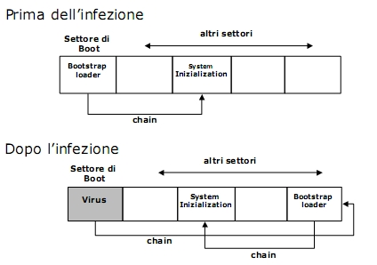

Torna alla pagina di Sicurezza & Privatezza
:: Appello d'esame di Sicurezza e Privatezza - 02/11/2005 ::
Domande
Rispondere brevemente ma in modo completo alle seguenti domande.
- Nell’ambito delle tipologie di crimini informatici, dire cosa si intende per sabotaggio e descrivere come questo attacco può essere classificato.
- Descrivere il funzionamento di un virus boot sector.
- Dire cosa si intende per canale coperto e fare un esempio.
- Nell’ambito delle tecniche di autenticazione, descrivere l’autenticazione basata sul possesso.
- Nell’ambito del controllo dell’accesso, descrivere il significato di politica discrezionale, politica mandatoria e politica basata sui ruoli .
- Nell’ambito del modello di Bell e LaPadula, fornire la definizione di simple security property e *-security property.
- Dire a cosa servono le politiche amministrative e fornire un esempio di polica amministrativa.
- Nell’ambito dei sistemi per il controllo dell’accesso avanzato, dire cosa si intende per supporto delle astrazioni e quali vantaggi derivano dal loro supporto.
- Descrivere come viene gestito il processo di revoca dei certificati in X.509.
- Nell’ambito delle tipologie di attacco alle reti, descrivere in cosa consiste l’attacco denominato masquerade.
SOLUZIONE
1.
Per sabotaggio si intende qualsiasi azione o iniziativa di disturbo o di danneggiamento intesa ad ostacolare il normale funzionamento del sistema.
Questo attacco può essere classificato in:
- sabotaggio fisico: consiste in un vero e proprio danneggiamento fisico
- sabotaggio logico: consiste nella modifica o nella distruzione dell'informazione al fine di sabotare il normale funzionamento del sistema
- sabotaggio psicologico: consiste nel logoramento psicologico dell'utente.
2.
Un vaaaiirus boot sector non può essere individuato da normali software antivirus perché entra in esecuzione prima dell'avvio del sistema e quindi prima degli stessi programmi antivirus.
Normale procedura di bootstrap senza infezione:
- accensione del computer
- test dei componenti hardware
- lettura del boot sector da hard disk
- caricamento del bootstrap loader che carica il sistema operativo
Procedura bootstrap con infezione:
- accensione del computer
- test dei componenti hardware
- esecuzione del virus
- caricamento del bootstrap loader che carica il sistema operativo col virus già in esecuzione
Slide:

3.
Un canale coperto è un canale nascosto di comunicazione che viola le politiche di sicurezza in quanto permette ad un processo di trasferire informazioni. E' un canale nascosto perché normalmente non viene utilizzato per trasferire informazioni.
Esempio:
In un esame a crocette con quattro risposte possibili (ovviamente tutti devono averle nello stesso ordine), Cthulhu e Dagon possono creare un canale coperto:
se la riposta corretta è la 1, allora Cthulhu ruggisce una volta
se la riposta corretta è la 2, allora Cthulhu ruggisce due volte
se la riposta corretta è la 3, allora Cthulhu ruggisce tre volta
se la riposta corretta è la 4, allora Cthulhu ruggisce quattro volte
se non sa cosa rispondere uccide tutti i presenti.
4.
L'autenticazione basata sul possesso si basa appunto sul possesso da parte dell'utente di un Token, cioè qualcosa di tangibile che l'utente utilizza per identificarsi. Ogni token ha una chiave crittografica usata per dimostrare l'identità del token al computer.
- Vantaggi: i token sono più sicuri delle password, mantenendo il controllo sul token l'utente mantiene controllo sull'utilizzo della sua identità.
Si può usare questo tipo di autenticazione combinata con la Conoscenza, quindi servono token e password per autenticarsi.
- Svantaggi: i token possono essere persi, rubati, falsificati.
Chiunque acquisisca un token può impersonare l'utente.
I token più utilizzati sono:
- memory card: hanno memoria, ma non capacità di processo. Sono usate con il PIN che però non possono controllare e nemmeno crittare per la trasmissione(quindi il PIN viaggia in chiaro). Sono vulnerabili quindi ad attacchi di sniffing.
- smart token: dispositivi che godono di capacità di processo il cui funzionamento si basa su meccanismi statici(l'utente si autentica al token e il token si autentica al sistema) e dinamici(il token genera periodicamente nuove chiavi)
5.
Esistono due tipologie di politiche di sicurezza : politiche relative al controllo dell'accesso e politiche amministrative. Tra le politiche di sicurezza si possono annoverare le politiche discrezionarie, le politiche mandatorie e le politiche basate sui ruoli.
- politiche discrezionarie: controllano l'accesso sulla base dell'identità degli utenti che lo richiedono e di regole che stabiliscono chi può, o non può, eseguire azioni sulle risorse. Si chiamano discrezionarie perché gli utenti possono avere l'autorità di passare i propri privilegi ad altri utenti: la concessione e la revoca di privilegi è controllata da una politica amministrativa.
Le politiche discrezionarie sono vulnerabili ai trojan horse perché controllano solamente gli accessi diretti alle informazioni.
Un esempio di politiche discrezionarie sono i comandi grant e revoke del linguaggio SQL. Il comando grant permette di concedere privilegi sulla risorsa agli utenti, mentre il comando revoke sottrae a un utente i privilegi che gli erano concessi.
- politiche mandatorie: impongono restrizioni sul flusso di informazioni sulla base di regole determinate dal proprietario. Un'autorità centrale determina quale informazione è accessibile e da chi, e l'utente non può in alcun modo modificare i diritti di accesso. Il presupposto fondamentale di questa politica è la dicotomia tra utente e soggetto: l'utente è la persona che è fidata, mentre il soggetto è il programma in esecuzione(il processo) che non è fidato, in quanto potrebbe contenere codice malizioso.
Un esempio di politica mandatoria si trova in ambito di sicurezza militare, dove nemmeno il proprietario di un dato può determinare chi abbia l'autorizzazione ai dati "top-secret" e nemmeno può cambiare l'autorizzazione da "top-secret" a "secret".
- politiche basate sui ruoli: prevedono che l'accesso degli utenti al sistema sia mediato dalle loro attività organizzative e dalle responsabilità che essi hanno all'interno del sistema e da regole che dichiarano quali accessi sono permessi agli utenti che godono di un determinato ruolo. Il ruolo può essere utilizzato in vari modi: può essere generico, e quindi riflettere un tipo di lavoro(es: segretaria), oppure essere più specifico, riflettendo un compito(es: registrazione fattura).
6.
Secondo il modello, uno stato (b, M, λ) è sicuro se e solo se soddisfa i seguenti criteri(ovvero proprietà che che esprimono i limiti imposti dalla politica mandatoria):
- Simple property: uno stato v soddisfa la “simple property” se per ogni s ∈ S, o ∈ O: (s,o,read) ∈ b → λ(s)≥ λ(o). Corrisponde al principio no-read-up;
- *-property(Star property): uno stato v soddisfa la “*-property” se per ogni s ∈ S, o ∈ O: (s,o,write) ∈ b → λ(o)≥ λ(s). Corrisponde al principio no-write-down.
7.
Le politiche amministrative definiscono a chi spetta il compito di concedere e/o revocare le autorizzazioni. Le autorizzazioni sono determinate dalle classificazioni assegnate a soggetti e oggetti del sistema:
- classificazioni dei soggetti sono determinate dall'amministratore di sicurezza
- classi degli oggetti sono determinate dal sistema in base alle classi dei soggetti che li hanno creati.
L'amministratore di sicurezza è l'unico che può cambiare le classi degli oggetti e dei soggetti.
I diversi tipi di politiche amministrative sono:
- amministrazione centralizzata: un singolo amministratore ha il controllo su tutto il sistema
- amministrazione gerarchica: un singolo amministratore è responsabile per assegnare responsabilità amministrative ad altri
- amministrazione cooperativa: diversi amministratori cooperano nella definizione delle autorizzazioni
- ownership: ogni oggetto ha un proprietario che lo amministra
- amministrazione decentralizzata: amministrazione suddivisa fra più utenti. Spesso associata all'ownership. Flessibile, ma con diverse complicazioni.
8.
Le autorizzazioni riferite a singole entità sono troppo pesanti da gestire quindi si ricorre alle astrazioni, che raggruppano le entità basandosi su relazioni gerarchiche:
- utenti/gruppi
- oggetti/classi
- file/directory
- pattern indirizzi IP numerici e simbolici
Il supporto delle astrazioni consiste nell'applicazione di eccezioni tramite autorizzazioni negative. I vantaggi sono dati dal fatto che le astrazioni semplificano la gestione delle autorizzazioni, che altrimenti avrebbero un'utilità limitata.
9.
Lo standard X.509 supporta due principali sistemi di revoca:
- data di validità
- revoca esplicita
Il CRL è una lista di certificati revocati che viene sempre controllata prima di considerare un certificato valido.
Per ogni certificato revocato il CRL contiene le seguenti informazioni:
- issuer
- last update date
- next update date
- firma CA
- lista dei numeri di serie dei certificati revocati con data di revoca
10.
Il termine masquerade indica la circostanza in cui una macchina dichiara di essere una macchina diversa. Sotto questo nome rientrano i seguenti casi:
- URL confusion: i nomi di dominio si possono facilmente confondere(es: xyz.com viene mascherato con xyz.it)
- Phishing: attraverso messaggi di posta elettronica fasulli opportunamente creati per apparire autentici si cerca di estorcere dati personali all'utente con la finalità di furto d'identità(es: la mail fasulla delle poste italiane che vi segnalava che eravate in rosso sul conto).
Torna alla pagina di Sicurezza & Privatezza